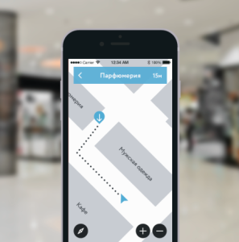

About Navigine Indoor Location Services¶
Navigine Indoor Location Services is a set of unified tools for indoor marketing, analysis, and tracking purposes. The tools’ application scope includes (and is not limited to) airports, shopping malls, universities, and so on.
The Navigine’s Indoor Location Services include:
| Navigine Indoor | Navigine Marketing | Navigine Analytics | Navigine Tracking |
|  | |||
| Navigine Indoor allows to implement navigation inside any building with up to 1 meter accuracy | Navigine Marketing is the tool to quickly embed indoor push-notifications into mobile apps | Navigine Analytics enables to analyze objects motion inside building in real time | Navigine Tracking allows to track the motion of staff, vehicles and other assets |
NAVIGINE INDOOR Accurate navigation inside any building |
Navigation platform Navigine enables mobile developers to create a wide range of services on the basis of high accurate indoor navigation. Mobile applications powered by Navigine Indoor helps visitors to easily navigate inside large buildings and building owners to monitor and manage their employees motion. In order to guarantee high accuracy navigation technology uses external infrastructure – iBeacon/Wi-Fi as well as internal smartphone sensors – accelerometers, gyroscopes, barometer, compass and also leverage map features and human motion model. Functions of Navigine Indoor are quickly and easily integrated into any mobile application using API/SDK Navigine. Proven Navigine approach allows to roll out navigation service on 50000 sq. m. per one day by one employee. You may evaluate service performance by ordering our Developer Kit. |
NAVIGINE MARKETING Indoor location advertisement in mobile apps |
Marketing platform Navigine is the tool to create and manage indoor push notifications in mobile applications on the basis of iBeacon technology. Using this platform mobile developers may significantly improve customer experience and monetization of mobile apps as well as advertisers may leverage additional marketing channel. As for technology our marketing platform uses Bluetooth Low Energy (Bluetooth 4.0) protocol. Requirements for platform opeations are availability of Bluetooth 4.0 on mobile devices and installed Bluetooth beacons in zones where push notifications are needed Functions of Navigine Marketing are integrated into mobile applications using API/SDK. In order to create and manage notifications developers receive an access to special web interface. |
NAVIGINE ANALYTICS Comprehensive indoor location analytics |
Allows building owners to analyze motion of visitors and staff inside their buildings. Services on the basis of Navigine Analytics helps to build motion heat maps and optimize marketing channels. |
NAVIGINE TRACKING Real time indoor tracking services |
Allows building owners to track the motion of staff, vehicles and other assets on the building’s premises. IT solutions using Navigine Tracking help to track objects’ indoor movements in real time and optimize logistics’ business processes. |